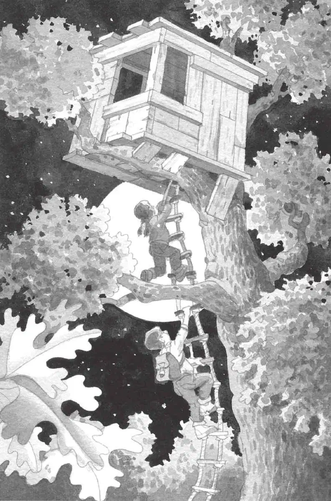

“杰克！”一个声音轻轻地叫道。
杰克睁开眼睛，看见月光下站着一个人。
“快醒醒，把衣服穿上。”是他的妹妹安妮。
杰克打开台灯，揉了揉眼睛。
安妮站在他的床边，穿着牛仔裤和运动衫。
“我们去树屋吧。”她提议道。
“现在几点啊？”杰克问。他把眼镜戴上。
“不要看钟。”安妮说。
杰克看了看钟。“哦，天哪，”他说，“这才半夜啊，外面太黑了。”
“不，不黑。月光很亮，我们能看见。”安妮说。
“等明天早上再说吧。”杰克说。
“不行，现在就去。”安妮坚决地说，“我们必须找到第四样东西。我有一种感觉，今天的满月可能会帮助我们。”
“真是疯了。”杰克说，“我还想睡觉呢。”
“我们回来之后，你可以睡个够。”安妮说，“反正这儿的时间不会流失。”
杰克叹了口气，说：“唉，真没办法。”
他还是从床上爬了起来。
“太好了！”安妮小声说，“咱们在后门见。”她踮着脚离开了杰克的房间。
杰克打了个哈欠，穿上牛仔裤、旅游鞋和运动衫，把笔记本和铅笔装进背包，然后悄声走下了楼梯。
安妮把后门打开，两人轻手轻脚地走了出去。
“等一等。”杰克说，“我们需要一把手电筒。”
“不，不需要。我跟你说过了，月亮会给我们照路的。”安妮说完，大步朝前走去。
杰克无奈地叹了口气，只好跟了上去。
“安妮说得对。”杰克想。月光很亮，他能看见自己的影子，周围的一切都像镀了一层银光。
不一会儿，他们就离开了街道。安妮领头朝蛙溪树林里走去。树林投下一道道暗影，树林里比外面黑多了。
杰克抬起头，寻找那座树屋。
“在那儿！”安妮叫道。
神奇的树屋在月光下闪烁着微光。
安妮抓住绳梯，开始往上爬。
“当心，慢一点儿。”杰克提醒道。
他跟着安妮顺着绳梯爬上去，进了树屋。
月光透过窗户洒进来，映照着地板上那个闪亮的字母M，还映照着放在它上面的那三样以字母M开头的东西：来自忍者时代的月光石（Moonstone），来自亚马孙热带雨林的杧果（Mango），来自冰川时代的猛犸象骨头（Mammoth bone）。
“只要再找到一样，”安妮说，“就能把仙女摩根从魔咒里解救出来了。”
“吱吱。”
“花生米！”安妮叫了一声。
在昏暗的光线里，杰克看见小老鼠正蹲在一本打开的书上。
“你没想到我们这么晚还会来，是不是？”安妮说。

安妮捧起小老鼠，杰克拿起那本打开的书。
“那么，我们这次要去哪儿呢？”安妮问。
杰克把书拿到月光下。
“糟糕，”他说，“我就知道应该带一把手电筒过来的。我现在什么都看不见。”
他只能隐约分辨出一些图标和黑乎乎的图片，至于纸上写着什么，他一个字也看不清。
“看看封面。”安妮说。
封面上的字大一些。杰克眯起眼睛仔细辨认。
“书名叫《你好，月球》。”他说。
安妮倒抽了一口冷气，问道：“我们要到月球上去？”
“当然不会，”杰克说，“没有一大堆的设备，根本不可能登月。”
“为什么？”
“月球上没有空气，我们没法儿呼吸。而且，如果是在白天，我们会被烤死；如果是在夜晚，我们会被冻死。”
“哎呀！”安妮惊叫一声，“那你说我们会去哪儿呢？”
“也许会去一个训练宇航员的地方。”杰克猜测。
“这听起来倒不错。”安妮说。
“是啊。”杰克说。他一直很想见识见识宇航员和太空科学家。
“那就快点儿许愿吧。”安妮催促道。
杰克把书打开，指着一幅圆形建筑的图片。
“请带我们去这里！”他说。
起风了。
树屋开始旋转，越转越快。
然后，一切都静止了。
完完全全地静止不动了。